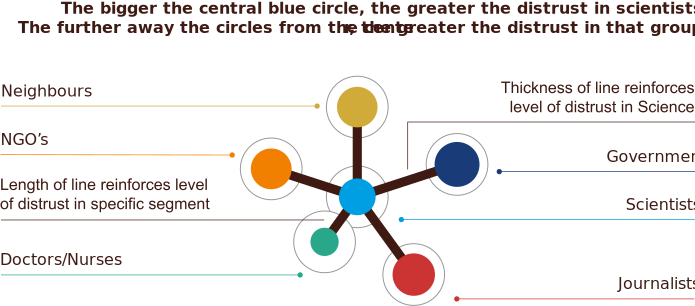

THE LENS OF SOCIETAL INSTITUTIONS
The role of societal context on trust in science
How is the perception of science affected by its alignment with different groups in society?
A lack of confidence in their major societal institutions - national government, neighbours, charities and journalists may lower a person’s trust in science and scientists.
South Africa ranks in the top 20% globally for distrust in its members of society, with the government being the least trusted of all members of society (53% of citizens distrust the government). Vietnam ranks average globally for distrust in scientists, but ranks 140/144 for trust in scientists, despite having above average levels of trust in its society.
Countries which show high distrust in society also show high distrust in scientists.
High Income
Upper Middle Income
Lower Middle Income
Low Income
Q12 In general, would you say that you trust science a lot, some, not much, or not at all?
Distrust in society: The mean of questions Q11A - Q11F answering not much or not all covering neighbours, government, journalists, doctors and nurses and NGOs.
People’s perception of science being shaped by overall trust levels raises questions about the extent to which science is seen as an objective and non-political practise.
In LMIC countries, scientists (70%) are only slightly more likely to be trusted as compared with journalists (64%) and nonprofits (60%). In HIC, scientists are generally more trusted (76%) and also much more likely to be trusted as compared with journalists (54%).
Doctors and nurses are much more trusted than scientists in all regions.
The trust in government question was not asked in many countries.
Globally, distrust neighbours (0.8) is more correlated to distrust in scientists than distrust in government (0.38).
IN THE CASE OF SOUTH AFRICA
Of our focus countries, South Africans are amongst the most distrustful in the world (top 20%), on the measures of trust in society and science.
South Africa showed highly correlated relationships between trust in science and trust in other members of society.
In terms of absolute numbers, the most distrusted segment of society was the national government, with 53% of people stating that they had “not much, or not trust at all” in them.
We took a closer look at the key milestones of distrust in South Africa where the government politicized science at the cost of public health outcomes.

Low distrust ≠ Trust in Vietnam
Trust is asymmetric in Vietnam. It shows low levels of distrust in society but higher levels of distrust in science and scientists. From a global level, this level of distrust in science and scientists is average, but intriguingly, Vietnam is one of the lowest in the world for saying they trust science and scientists. They have very large proportions replying “don’t know”
Key Takeway
Socio-political events and societal actors play an important role in the public perception of trust in science. Some of these events are well known - others less so. Understanding the existing landscape and contextualising interventions is necessary to ensure uptake and adoption.
Opportunity
How might science better understand, record and account for contextual complexity?
The Lens of Societal institutions
How much or how little are different societal groups in a country trusted, and does this affect trust in scientists?
Negative experiences with the state, non-profits, journalists, neighbours, doctors and nurses may color the perception of science and scientists.
Use this lens to understand how much or how little are the different societal groups in a country trusted, and whether this affects trust in scientists.
